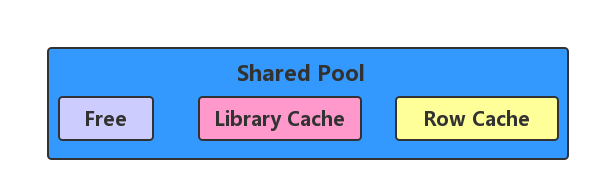

HELLO,
MY NAME IS XuJianGuo AND THIS IS MY BLOG
通过绑定变量实现SQL共享
Shared Pool的三大区域
SQL的解析跟Shared Pool有莫大的关系，在这里我先说一下Shared Pool里面的三大区域，有助于下面的理解。
Library Cache。我们都知道SQL解析成执行计划后，会将SQL和执行计划缓存到Shared Pool中，具体就是缓存到这个Library Cache中。
Free Memory。从名字我们知道这是一个未被使用的空间，当我们需要存储SQL和执行计划的时候，就是要从Free Memory中获取空间，然后写入信息，再挂载到Library Cache上。
Row Cache。Row Cache存储的是数据字典的信息。数据字典表和用户创建的表没有什么区别，不过数据字典表里的数据是Oracle系统存放的系统数据，而普通表存放的是用户的数据而已。
我们可以通过数据字典查看这三个区域的情况：
SQL> select * from v$sgastat a where a.name='library cache';
POOL NAME BYTES
------------ -------------------------- ----------
shared pool library cache 5797432
SQL> select * from v$sgastat a where a.pool='shared pool' and a.name='free memory';
POOL NAME BYTES
------------ -------------------------- ----------
shared pool free memory 18805208
SQL> select * from v$sgastat a where a.name='row cache';
POOL NAME BYTES
------------ -------------------------- ----------
shared pool row cache 7480368
共享SQL
在说共享SQL之前，我们先说说SQL的两个解析方式：硬解析和软解析。
硬解析。服务器进程在试图将SQL解析成执行计划的时候，若未能在Library Cache中命中缓存，就需要消耗CPU等资源去解析执行计划，这个过程就叫硬解析。
软解析。若在Library Cache中能够命中缓存，执行获取已有的执行计划，就省去了解析成执行计划的过程，这个过程就是软解析。
毫无疑问，Oracle更加喜欢软解析，软解析能省去很多工作。所谓的共享SQL，就是尽可能的进行软解析，使一条SQL能被多种形式的SQL共享。
问题出现
首先创建表：
SQL> create table t1 as select * from dba_objects;
Table created.
清空Shared Pool，主要是之前的缓存。
SQL> alter system flush shared_pool;
System altered.
我们执行下面三条SQL：
SQL> select /*xujianguo*/count(*) from t1 where object_id=1;
COUNT(*)
----------
0
SQL> select /*xujianguo*/count(*) from t1 where object_id=21;
COUNT(*)
----------
1
SQL> select /*xujianguo*/count(*) from t1 where object_id=100;
COUNT(*)
----------
1
我们会产生这样的疑问，Oracle在处理这三条这么像的SQL的时候会不会弄成统一的一条呢，如果弄成一条的话就可以实现SQL共享了，下面给出了答案：
SQL> select sql_id, sql_text, executions from v$sql where sql_text like '%xujianguo%';
SQL_ID
-------------
SQL_TEXT
--------------------------------------------------------------------------------
EXECUTIONS
----------
3wsdxzxsz4dy9
select /*xujianguo*/count(*) from t1 where object_id=21
1
SQL_ID
-------------
SQL_TEXT
--------------------------------------------------------------------------------
EXECUTIONS
----------
9gp9yj0kmk1dp
select sql_id, sql_text, executions from v$sql where sql_text like '%xujianguo%'
1
4kt07u7sxyjy1
select /*xujianguo*/count(*) from t1 where object_id=100
SQL_ID
-------------
SQL_TEXT
--------------------------------------------------------------------------------
EXECUTIONS
----------
1
8hahfjs1xyk4g
select /*xujianguo*/count(*) from t1 where object_id=1
1
很明显，Oracle没有这么做，我们看到每条SQL的sql_id都是不一样的，所有说sql_id是区别SQL想不想同的标记，我们看到每条SQL的执行次数都是1次，所以没有实现SQL共享，下面我们通过绑定变量来实现SQL共享。
使用绑定变量解决问题
SQL分为静态部分和动态部分，对于上面那条SQL来说，除了最后一个参数是动态部分其他都是静态的，绑定变量的思路就是通过占位符去占掉动态的部分，静态的部分保持不变，这个的SQL就确定了，只是运行时传入的参数不一样。
declare v_sql varchar2(100);
begin
for i in 1..50 loop
v_sql := 'select /*xujianguo*/ count(*) from t1 where object_id=(:i)';
execute immediate v_sql using i;
end loop;
commit;
end;
我们执行看看什么情况：
SQL> declare v_sql varchar2(100);
2 begin
3 for i in 1..50 loop
4 v_sql := 'select /*xujianguo*/ count(*) from t1 where object_id=(:i)';
5 execute immediate v_sql using i;
6 end loop;
7 commit;
8 end;
9 /
PL/SQL procedure successfully completed.
SQL> select sql_id, sql_text, executions from v$sql where sql_text like '%xujianguo%';
SQL_ID
-------------
SQL_TEXT
--------------------------------------------------------------------------------
EXECUTIONS
----------
dx12bvp6jc905
select /*xujianguo*/ count(*) from t1 where object_id=(:i)
50
9gp9yj0kmk1dp
select sql_id, sql_text, executions from v$sql where sql_text like '%xujianguo%'
1
SQL_ID
-------------
SQL_TEXT
--------------------------------------------------------------------------------
EXECUTIONS
----------
0f8p7c78nr35s
declare v_sql varchar2(100); begin for i in 1..50 loop v_sql := 'select /*xuj
ianguo*/ count(*) from t1 where object_id=(:i)'; execute immediate v_sql using
i; end loop; commit; end;
1
跟我们猜想的一样，共享的SQL被执行了50次，要的就是这种效果，不过也要根据实际情况分析，不能盲目使用，毕竟也不是很方便。